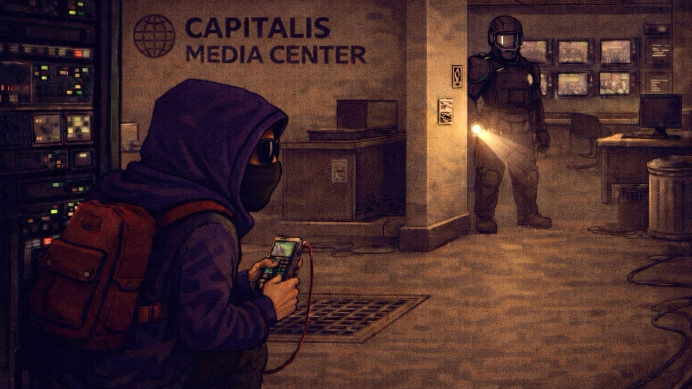

When the City Answers Back
Part of New & Improved™ — A deep dive into creating a culturally relevant video game.

Content here
A Different Kind of Ending
Up to this point, this series has traced a path from intent to systems, from systems to space, and from space to action. I started by asking why I wanted to make a game like New & Improved™ at all. From there, I explored how meaning might survive translation into mechanics, how progression could shape a city, and how small, local acts could feel tense, risky, and real.
This final installment looks forward. Not to a boss fight or a leaderboard, but to a moment where all those threads converge. What happens when the player has learned the city well enough to challenge it directly? What does “winning” look like in a game about cultural resistance?
This isn’t about revealing a twist or documenting a solved problem. It’s about the shape of an ending, and what that shape says about the kind of game New & Improved™ can be.
Design Note
Endings shouldn’t just conclude games. They recontextualize everything that came before.
Gaining Access Without Giving It Away
The final stretch of New & Improved™ hinges on access. Not firepower. Not stats. Access. Earned slowly, across districts, through trust, preparation, and a growing underground network.
By the time the endgame becomes visible, the player has already done the work. They’ve built Street Cred, pushed the Subversion Meter, helped locals, scouted spaces, and learned how authority moves through Capitalis. The last major objective doesn’t appear suddenly. It emerges as a consequence of the player’s actions throughout the game.
Reaching the Capitalis Media Center isn’t about storming the gates. It’s about having the right keys, the right timing, and the confidence that the city will respond when pushed.
What the player does inside matters. How they get there matters more.
Design Note
Power feels earned when it arrives as recognition, not escalation.
he Final Broadcast Hack (Seen From the Outside)
The Final Broadcast Hack is the game’s most overtly symbolic act. It’s designed to feel procedural, not theatrical. It’s not a conclusive narrative dialog. It’s not a cutscene where the player watches the final pieces of the puzzle fall in place. It’s a sequence of deliberate actions that rely on skills learned over the entirety of the game.
Infiltration, navigation, and execution draw from familiar mechanics and are recombined under pressure. The space behaves differently. The stakes are clearer. The margin for error feels thinner.
What happens afterward is intentionally restrained in description. The game doesn’t need to explain what the player has done. The city does that on its own.
Design Note
The strongest moments don’t announce themselves. They are a result of the fulfillment of player actions.
After the Signal
Success doesn’t roll credits immediately.
Instead, the player is returned to a changed Capitalis. The Subversion Meter no longer fluctuates, rather, it holds. NPCs don’t wait for instructions. Acts of resistance continue without the player’s direct involvement. The city remembers.
Importantly, this isn’t a utopia. Authority doesn’t vanish. Tension doesn’t evaporate. What changes is the momentum. The player is no longer the sole driver of cultural friction. They’re part of a broader movement that the game now sustains on its own.
The win condition isn’t domination, but displacement.
Design Note
A living city should outgrow the player who helped shape it.
Rethinking Victory
Traditional game endings often measure success in elimination. How many enemies defeated, how many towers climbed, how scores were maximized… New & Improved™ asks a quieter question: what if victory means shifting the terms of engagement?
The player doesn’t conquer Capitalis. They interrupt it. They introduce enough noise, doubt, and solidarity that control can no longer pretend to be invisible.
In that sense, the endgame isn’t about closure, it’s about proof. Proof that mechanics can argue. That systems can persuade. That play can carry ideology without becoming a lecture.
Design Note
Winning doesn’t require annihilation. It requires persistence.
What This Process Reinforced
Designing New & Improved™, even at the level of documentation and speculation, has reinforced a few of my core beliefs.
First, that mechanics are never neutral. They always say something (whether the designer intends them to or not). Second, that restraint can be more powerful than spectacle. And finally, that games are uniquely suited to exploring cultural systems because they ask players to participate, not observe.
This project didn’t emerge from certainty. It emerged from curiosity and a desire to see whether games could hold more weight without collapsing under it.
Design Note
Punk isn’t about chaos. It’s about deciding on a stance, applying pressure, and sticking to it.
Closing the Loop
New & Improved™ began as a question: what if a game treated culture as something you could act on, not just react to? That question has taken shape as mechanics, districts, systems, and a city that can be changed without being destroyed.
At this point, the design exists as a map of ideas, tensions, and intentions. The next step – making all of this a reality – ain’t easy.
But Capitalis is ready. It’s a manifesto in pixels.
Page formatted by Written & Formatted. © Tim Samoff.